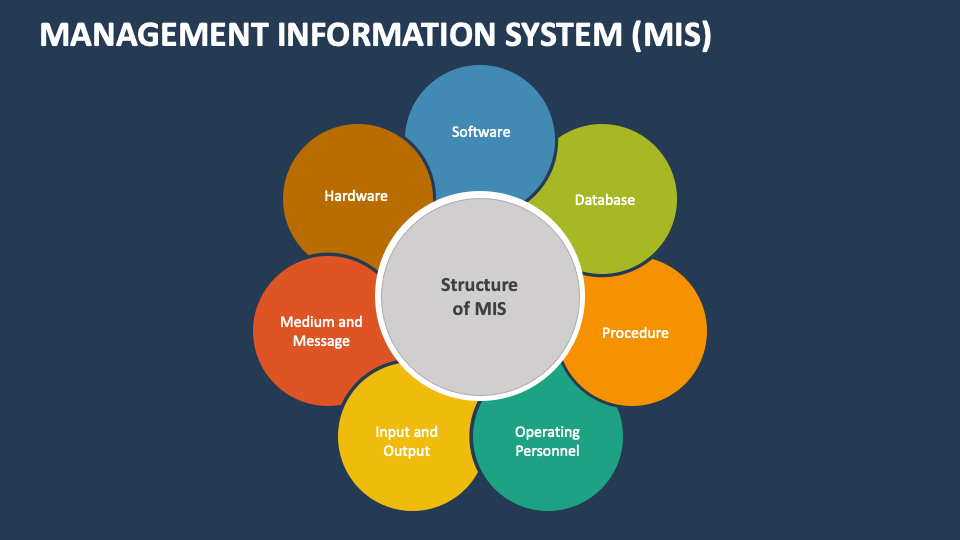

Navigating AI in MIS
Website Overview
Nana Fujita
October 20, 2026
Home |
AI Usage |
Security |
About Us

Management Information Systems (MIS) is a computer-based
system that moves information about people, products,
and processes across the company to facilitate
decision-making and problem-solving. This website will
explain the importance of
MIS
and how technology is used in
workplace and academic settings.
Artificial Intelligence
helps analyze data, automate repetitive tasks, and
support complex problems. As AI use increases, we
will explore its ethical boundaries and how
to use it responsibly. We will also discuss how
AI can support students and employees while
recognizing the importance of originality and
personalization. Overall, it will show how MIS,
AI ethics, and
security
work together to help organizations use technology
effectively.
AI Polished:
Management Information Systems (MIS) uses
computer-based systems to manage information about
people, products, and processes, helping
organizations make decisions and solve problems.
This website explains the importance of MIS and how
technology is used in academic and workplace settings.
Artificial Intelligence (AI) can analyze data,
automate repetitive tasks, and assist with complex
problems. As AI becomes more widely used, we will
explore its ethical boundaries and the importance
of using it responsibly. We will also discuss how
AI can support students and employees while
preserving originality and personal input.
Overall, this website highlights how MIS,
AI ethics, and cybersecurity work together to
help organizations use technology effectively
and responsibly.
MIS Topic Overview
| MIS Topic Name |
Description / Purpose |
| Artificial Intelligence (AI) |
Simulates human intelligence processes
through computer systems, software, or machines.
|
| Cybersecurity |
Protects computer systems, networks, and
sensitive information from digital attacks,
theft, or damage.
|
| Data Analytics |
Examines raw datasets to uncover patterns,
trends, and results that support evidence-based
decision-making.
|
|